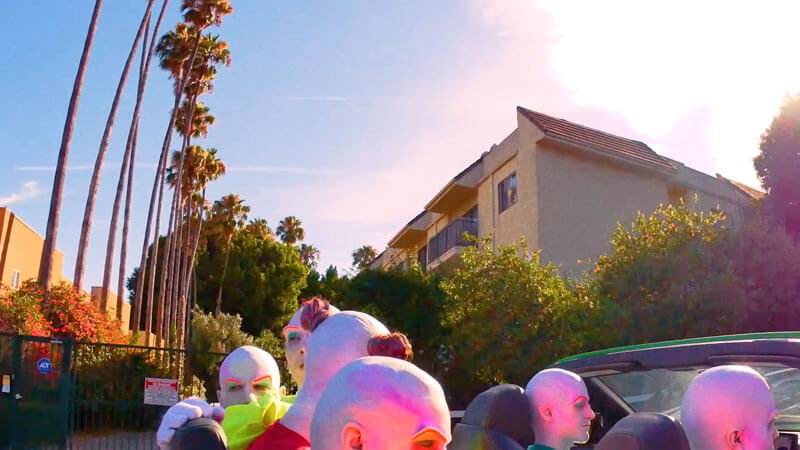
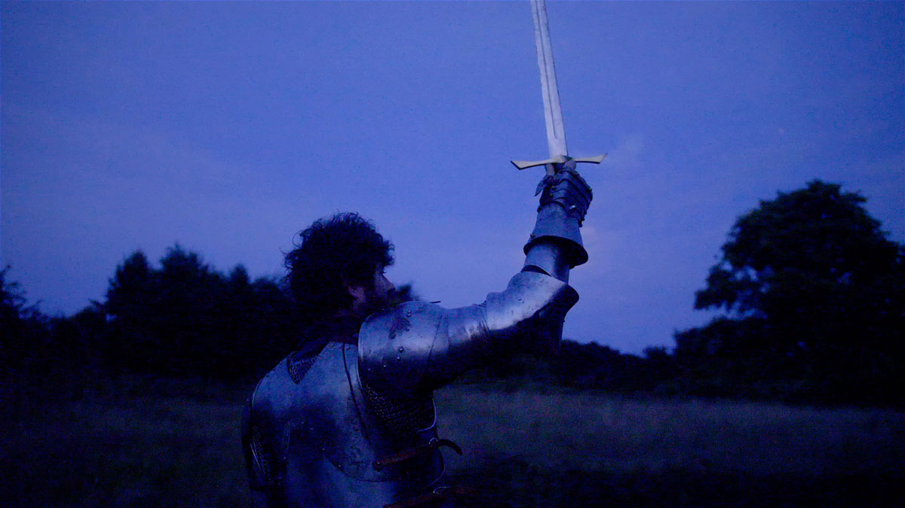

A noteworthy bag of tricks from Seattle’s shapeshifter: Joe Waine’s uncanny pursuit of restless grandeur presents him at his most piquant.
Featured Tracks:
Joe Waine’s Fat Dreams of Italy blooms out of hallucinatory waltzes in picturesque villages, medieval gardens, & Italian coastlines. Feverish fantasies — fleeting disappearances into sweaty iridescence — ripen to bursting, spill over the album, & suspend the record in ecstatic beauty. Exhausting opulence & restless grandeur have illuminated his latest release, introducing Waine at his most lucid yet.
A somnambulant delicacy, Fat Dreams lauds the resonant gloss of past & present generations: gyred Wurlizters, thrummy harpsichords, & foamy Mellotrons; the pluck of 1960’s Martin nylon-warming drowsy lap steel; Vintage Craviotto drums — exuberantly woody & tenderly honest; & swollen vocal harmonies. Every track thrives on hazy splendor; each minute of song fearing & rejoicing in its inevitable end.

Despite its languor, Fat Dreams is not music for idling to. Interrogating leitmotifs like male empathy, body image, & past lives, Waine delves deep within to discover findings both individual & universal. A sonetto for our collective consciousness, Waine channels these unearthly visions to investigate the weights we carry — whether conscious or unconscious.
On Fat Dreams of Italy’s standout track, “Seeing You Soon”, steel-guitar-like riffs ripple throughout the dreamy track, and the LA-sun-soaked electric piano heats up the song. Like reptiles, the longer a listener basks in the warmth of Waine’s latest release, the more alive they will feel. It’s strangely befitting then that Waine sourced green iguanas, veiled chameleons, and albino pythons for his music video.
In addition to his scaly friends, “Seeing You Soon” features Tim & Eric’s longtime collaborator Tennesse Luke. The Beef Housei> star hangs out of Waine’s carmine BMW like a child on a wooden roller coaster, a nostalgic twinkle in his eye and a genial smile on his face.

Released April 1st on Halfshell Records, Waine’s Fat Dreams of Italy is a true spring treat in this time of tricks. Here’s his official artist statement on his recent release:
“Two demographics that have been hit extra hard during these Covid [sic] times are the Seattle homeless community, and the people of Italy. I have decided to donate 100% of funds from Fat Dreams of Italy to Mary's Place & Casa Di Accoglienza. These two organizations are doing a great job of providing relief and aid to the people. Check them out!”
Listen to Waine’s full album on BandCamp.